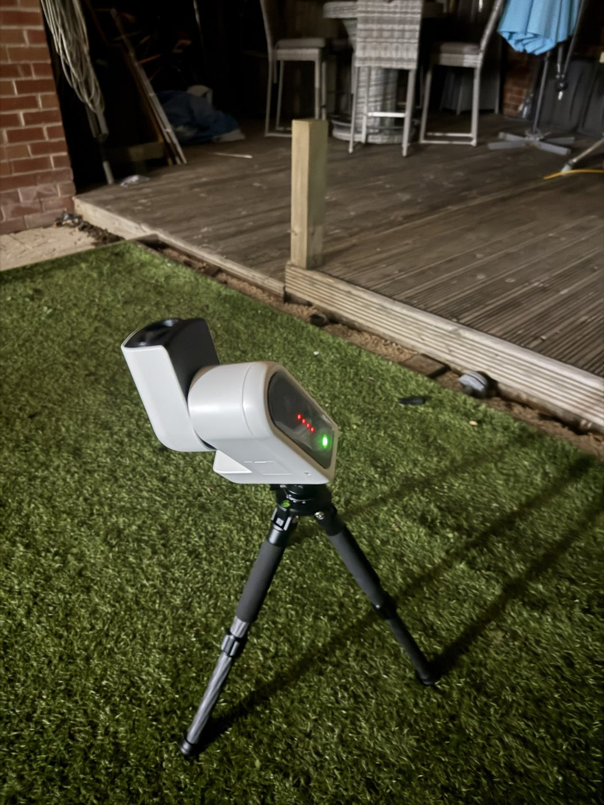
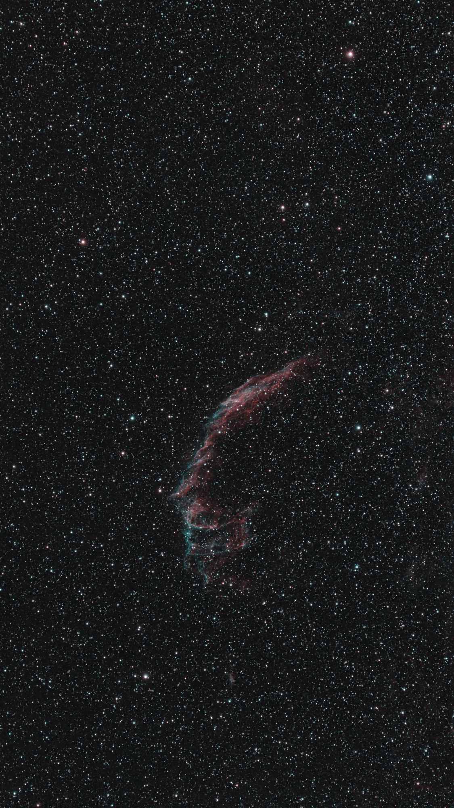
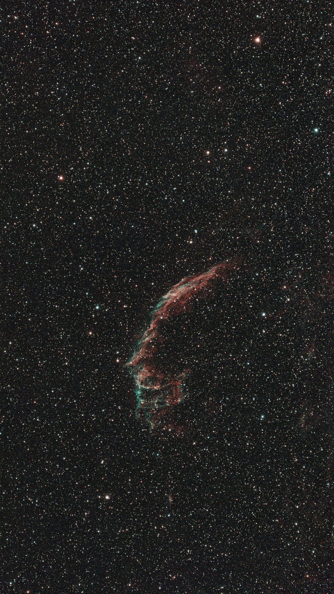
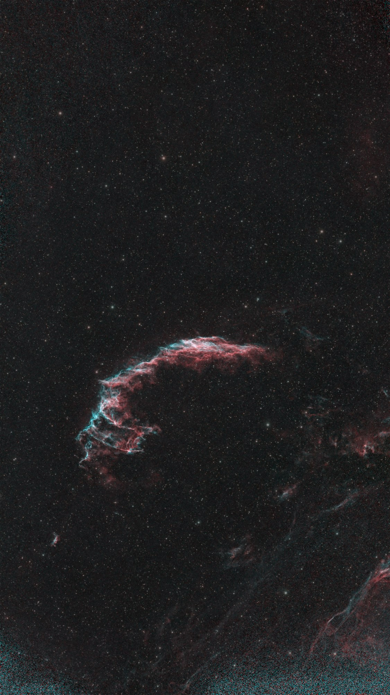
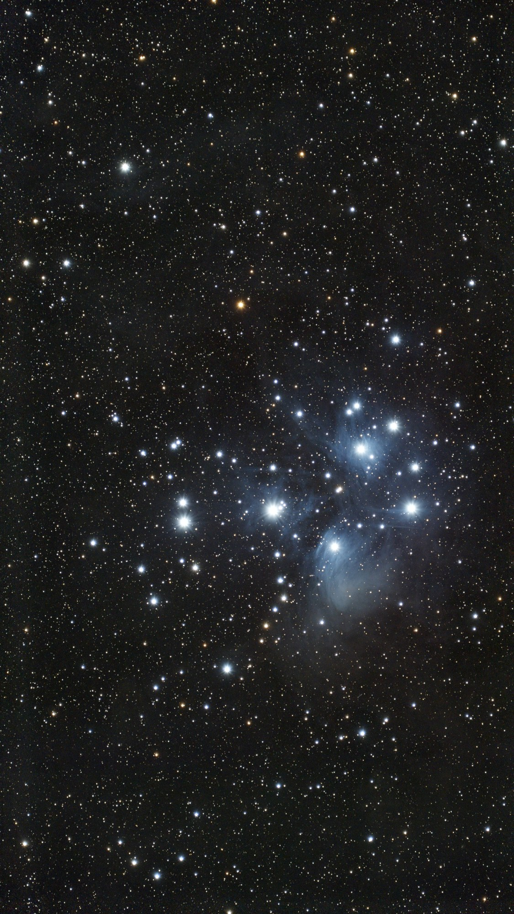

Night log · Friday 9 October 2026
Four hours on the Veil, then the Pleiades
The plan
Scope Nights rated Friday "Good, mostly clear" with a 1% Moon: the best night of the week. It was also the first night on the TH10 equatorial wedge. The idea was to go deep on one colourful target rather than sample several: four hours on the Eastern Veil, about three times the first night's data, then the Pleiades from 00:30 until dawn. The Pleiades are blue reflection nebulosity that needs a properly dark, moonless sky and no narrowband filter.
- 20:30–00:30
- NGC 6992 Veil
- Veil settings
- 30 s · gain 200 · dual-band
- 00:30–05:25
- M45 Pleiades
- Pleiades settings
- 30 s · gain 100 · IR-cut
- Moon
- New, 1%
Setting up: polar alignment under cloud

The app's polar-alignment routine reported the scope pointing 103° away from the pole, an impossible-looking figure. Claude took a test shot with the telescope's wide camera, which showed lumpy cloud lit orange from below. The alignment routine had been photographing cloud.
Three weather models disagreed about the night. The Met Office model showed passing low cloud and the European and German models showed clear skies. Claude set the wide camera to check the sky every five minutes. By 20:35 it had cleared, and the next alignment read 0.7° in each axis, inside the 1° target.
One more snag: the telescope refused to take pictures for Claude while the phone app was still open. The app holds on to the main camera after alignment. Closing the app fixed it.
The Veil, 20:49 to 00:30: 272 frames, 2.3 hours
- Centred to within 1.1 arcminutes after two plate solves, and autofocus confirmed sharp focus.
- The first frame showed 400 stars, the clear-sky level, and it stayed at 400 every hour. The forecast 21:00 cloud never arrived.
- Hourly refocus moved the focuser 10 steps as the night cooled.
- Two scheduled re-centres timed out talking to the scope. Capture carried on regardless, and the next re-centre worked.
I was worried the artificial lawn under the tripod might let it sink. Claude plate-solved every sixth frame of the night to check. Between deliberate moves the pointing held still to a fraction of an arcminute for 10–15 minutes at a time, with no slow creep, so the tripod and polar alignment were solid. The only movement was the dither nudges, which turned out to be about five times larger than intended on the wedge. That gets fixed before the next night.
Results: the Veil
272 frames came off the telescope, and 237 of them aligned cleanly: 1 hour 58 minutes of data, against 46 minutes on the first night. The first versions were on my phone at 01:00. The pictures here are the morning re-run, with the end-of-night dark frames and the upgraded processing (AI sharpening, AI star removal, and colour calibrated against Gaia star spectra).

Compared with the first night, the extra time shows in the filaments. The teal oxygen edge is now continuous along the leading side of the shock front, and the fine braided strands at the southern end are separated rather than smeared.


Results: two nights combined
Then the first multi-night combine. All 412 Veil frames from Tuesday and Friday went into one stack. Each night was calibrated with its own dark frames, since Tuesday used 20-second exposures and Friday 30-second ones. Then every frame was aligned to one reference and stacked, with the cleaner frames counting for more. 374 frames made it in: 2 hours 46 minutes in total.

The braided structure along the arc, where the shock wave from the supernova is hitting denser gas, is the clearest it has been. The wider frame also starts to pick up faint wisps of the rest of the Cygnus Loop.
This is the first picture through the new top tier of processing. It runs PixInsight's BlurXTerminator, an AI deconvolution tool that undoes some of the blur from the optics and the atmosphere, then StarXTerminator to lift the stars off the nebula. Both run unattended on the office PC. Against the free tools, the stars come out as genuine pinpoints and the thin filaments separate more cleanly.

Updated Saturday morning: the first versions of these were processed before the night's dark frames existed (they're taken at the end of the night). Everything on this page is now the re-run with darks.
Results: the Pleiades
After the Veil, the scope swung across to the Pleiades and kept going until 05:25, when the sky started to brighten. Every one of the 398 thirty-second frames aligned and went into the stack: 3 hours 19 minutes, the longest single run so far. No narrowband filter this time, just the IR-cut filter and a lower gain, because the stars here are bright and the nebula is reflected starlight rather than glowing gas.

The blue haze is dust that the cluster happens to be passing through, lit by its hot young stars, and the long exposure brings out its streaky texture, especially below Merope (the bright star at the bottom of the main group). The background stars show their real colours too: the stack was colour-calibrated against star spectra from the Gaia space telescope's catalogue, so the orange ones really are cooler stars.

Not perfect yet. On the wedge the pointing wandered between 3 and 39 arcminutes from the cluster through the night, and four of the half-hourly re-centres timed out. With a field of view this wide it didn't cost any frames, but it's the next thing to fix before Saturday.
The night in numbers
- Light frames
- 670
- Lost to cloud
- 2
- Refocuses
- 7
- Dark frames
- 30